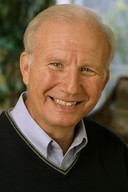

Steve Douglass is President of both Campus Crusade for Christ International, and
Cru, as the ministry is known in the United States.
Douglass came to the ministry after graduating from the Massachusetts Institute of Technology and Harvard Business School. Over more than four decades of service, he has held a variety of positions, including Executive Vice President and Director of U.S. Ministries. In July 2001, Douglass took over as the President of Campus Crusade for Christ International from founder Bill Bright.
He is the author or co-author of several books, including Managing Yourself, How to Achieve Your Potential and Enjoy Life, and Enjoying Your Walk with God.
Steve definitely believes in the Lighthouse strategy and applies it in his own life. He serves on the Board of Directors of
Mission America, and personally
prays, cares and shares in his own neighborhood.
In over 45 years of Christian work, Steve has sought to better follow Jesus and help others to do the same. He enjoys offering practical, relevant approaches and ideas to help people extend their influence for Christ to neighbors, family and friends.
Along with his wife Judy, Steve resides in Orlando, Florida. They have three grown children and seven grandchildren.